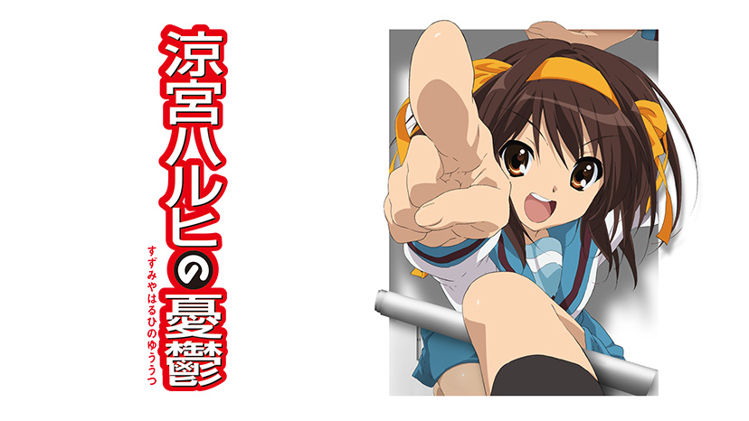
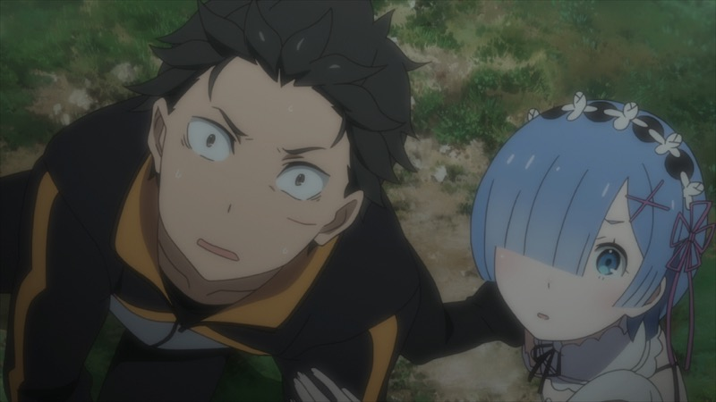
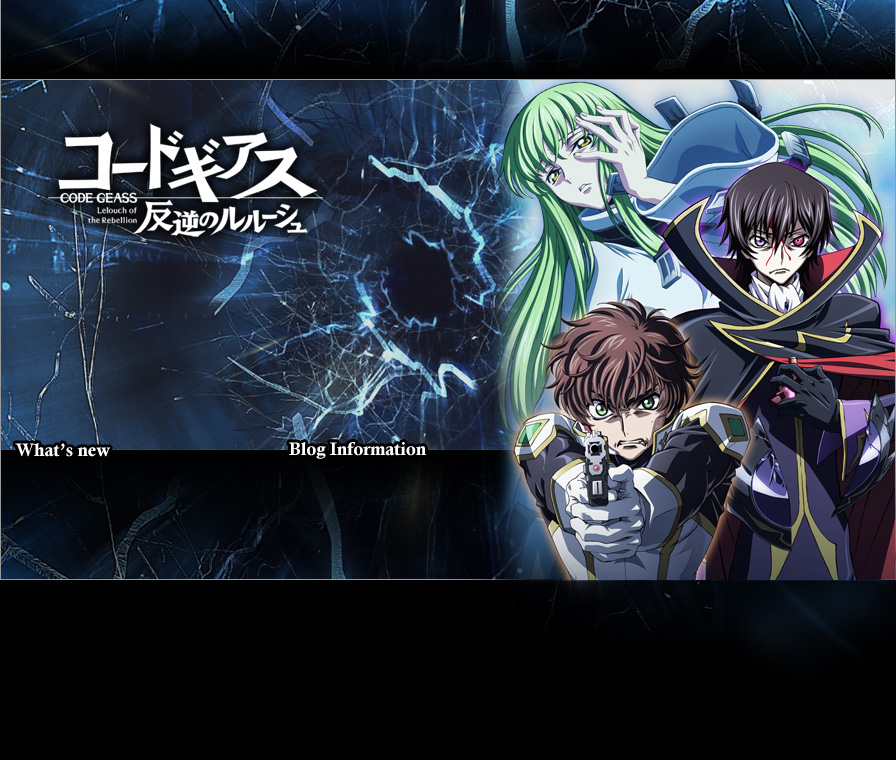
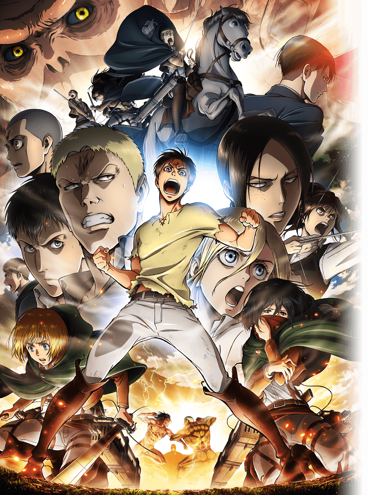
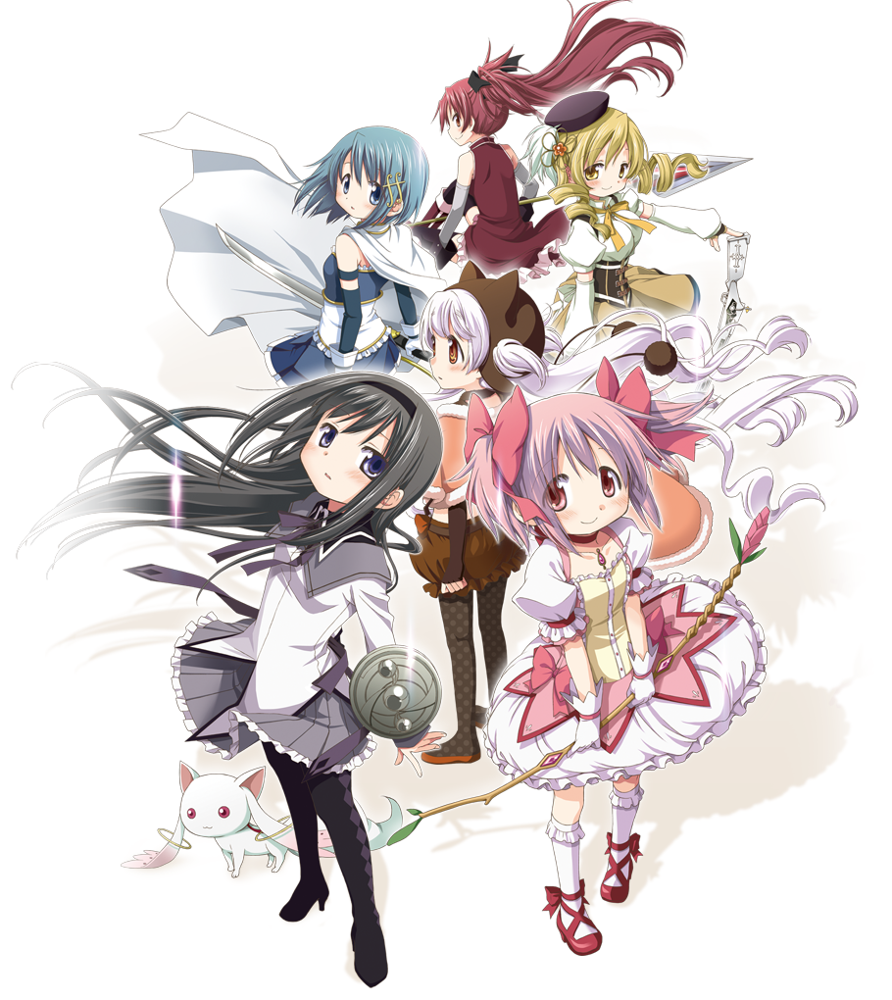
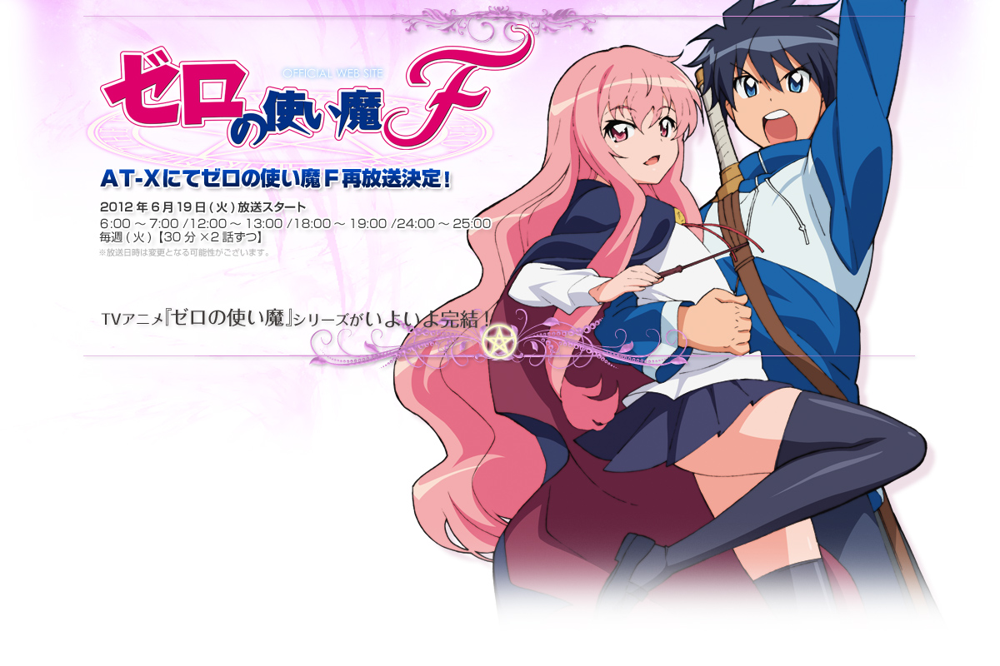
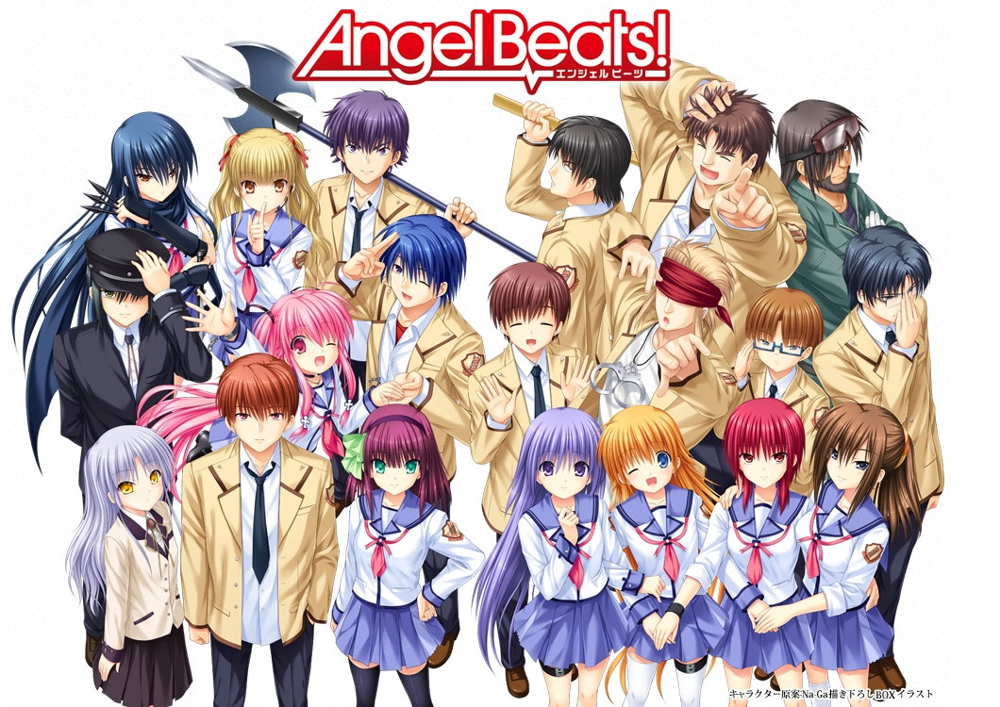
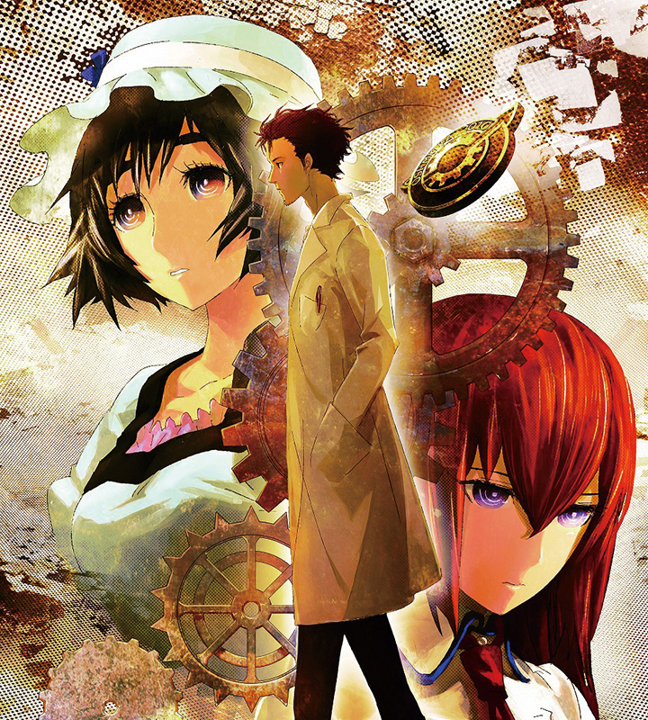
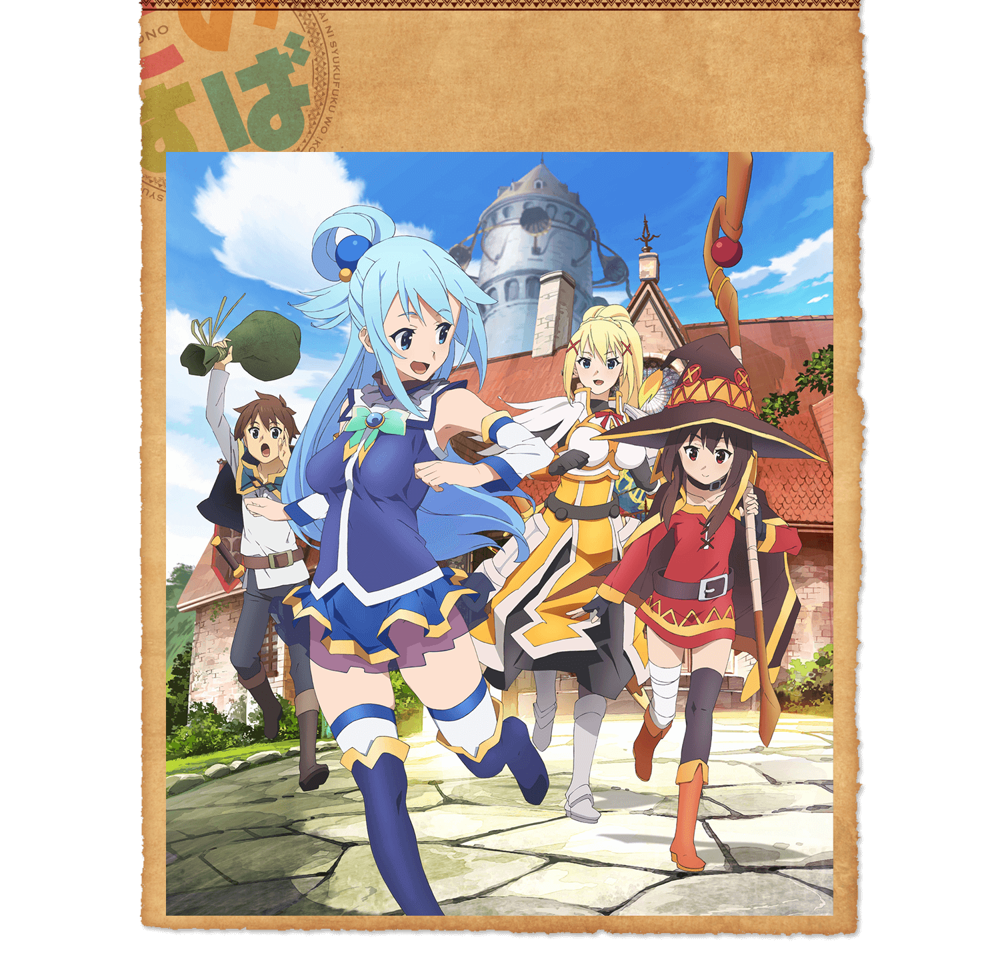
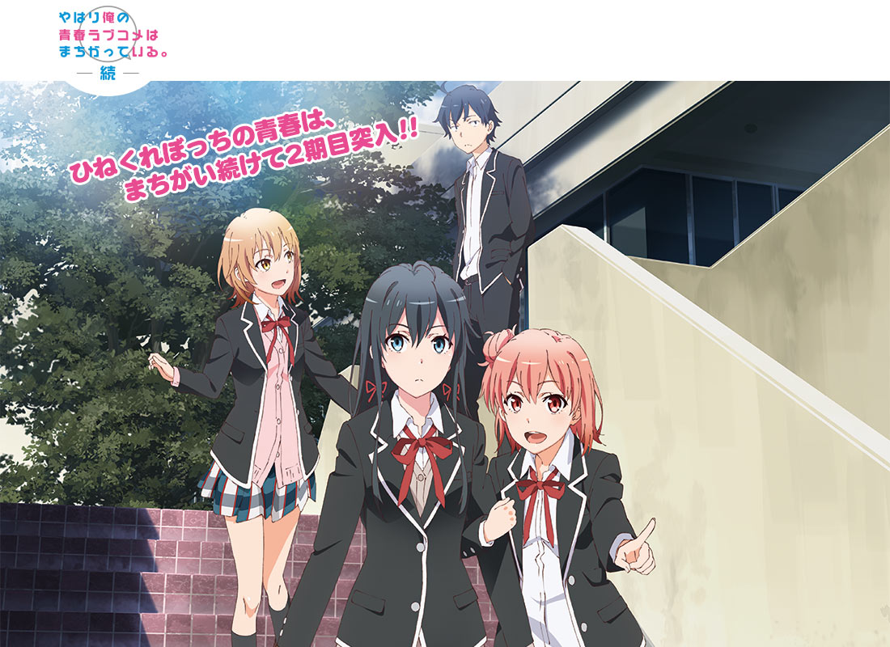

おすすめアニメ
自的に好きだと思うアニメタイトルを10個ぐらい紹介します
涼宮ハルヒの憂鬱
出典：涼宮ハルヒの憂鬱 | NHKアニメワールド - NHKオンライン
何といってもまずはこれ。全国のアニオタの元祖といえるアニメ。何度見ても面白い。 宇宙人、未来人、超能力者がでてくるとんでも設定にもかかわらず、アニメストーリー、キャラクター設定がすごくよく練られていて、見ている自分をその世界に入り込ませてくる、夢中になるアニメ。
ただし途中にある「エンドレスエイト」という話回には注意
Re：ゼロから始める異世界生活
出典：TVアニメ『Re:ゼロから始める異世界生活』オフィシャルサイト
最近のアニメのなかで頭一つ飛びぬけて面白かった。魔女の呪いによって、死ぬとある時点まで時間が巻き戻ってしまう体になった主人公。なんだ死に戻りか...と思った人は見るべき。すごく続きが気になるアニメ。朝目を覚ますと、昨日の朝になっている...
Reゼロの2期がすごい楽しみ。原作を読んで続きは知ってはいても、この記事を書くためにアニメを思い出すだけで寒気がｗ
コードギアス 反逆のルルーシェ
超能力、オッドアイ、黒マントという厨二病要素満載のアニメということで敬遠しないでほしい。 厨二病じゃない僕から見ても面白く、このようなサイトには大体上がる定番のアニメ。 頭脳戦は巧妙で、とにかく引き込まれる壮絶なストーリーと世界観を持つ。 ロボットは出るがロボットアニメではないので、ロボットアニメ嫌いにも、安心してみることができる。
進撃の巨人
いわずとも知れた超大作アニメ。戦闘シーンの躍動感がすごく、巨人の迫力もすさまじい。原作もいいけどアニメはもっといい。 グロいからとかいう人の気が知れない、それぐらい面白い。
魔法少女まどか☆マギカ
出典：「劇場版 魔法少女まどか☆マギカ[新編]叛逆の物語」公式サイト
ストーリーがかなり練られた作品。はじめはあまり評判は良くなかったが、回が進むにつれ面白くなり、評判も上がってきた。 だが、はっきり言って描写や世界観がかなり独特。なので取っかかりにくい人には理解に時間がかかる。
劇場版とTVアニメ版があり、劇場版の[全編]始まりの物語,[後編]永遠の物語(1,2作目)はTVアニメ版のリメイクなのでほぼ同じ内容となっていて、[新編]叛逆の物語は完全新作という構成になっている。なので、時間のない人は、内容理解のために劇場版だけ、というのもいいかもしれないが、僕は音楽も好きで、TVアニメ版しかない圧迫感もあるので、TVアニメ→劇場版というのをお勧めする。
ゼロの使い魔
出典：ゼロの使い魔F オフィシャルウェブサイト?「ゼロの使い魔F」- ヤマグチノボル・メディアファクトリー／ゼロの使い魔Ｆ製作委員会
異世界召喚・ハーレムと、今では珍しくないアニメだが、複雑な人間関係が結構面白い。それでもファンタジーの原点？みたいなところがあり、ファンタジーとしても面白い。
Angel Beats!-エンジェルビーツ!
死後の世界、過去の悔いに取りつかれた人たちが集まる学園で繰り広げられる、感動のストーリーとそれを強調する作中の楽曲は、見る人すべてを泣かせます( ｰ`дｰ´)
STEINS；GATE（シュタインズ・ゲート）
出典：TVアニメ『STEINS;GATE（シュタインズ・ゲート）』公式サイト
夢のタイムマシンを開発し、喜ぶ主人公はそれによって引き起こされる未来を知り、さまざまな時間軸を奔走するお話。
ストーリーがすごく複雑に組まれているのに、後半に複線を回収していくところはかなり爽快。1話だけみてつまらないと思った人もちゃんと見ていくべき。見ているうちに止まらなくなります。
この素晴らしい世界に祝福を!
これは面白いというよりも楽しい、ファンタジーギャグアニメ。小ネタから全力ネタまであり、抱腹絶倒注意。ただ作画があまりいいとは言えないので、あくまでギャグアニメとして楽しもう。内容的に中高生向け。
やはり俺の青春ラブコメは間違っている
出典：やはり俺の青春ラブコメはまちがっている。続 公式ホームページ｜TBSテレビ
八幡先生、ためになります。ひねくれぼっちの男子高校生の学園ラブコメ。思春期の織り成す人間関係が面白くて、すごく引き込まれる。誰でも一回はこんな体験したことあるはず。
修学旅行のところが自分的にはかなり好き。あといろはすかわいいｗおもわせぶりかわいいｗｗ